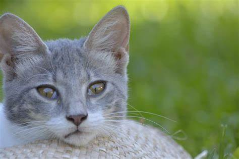
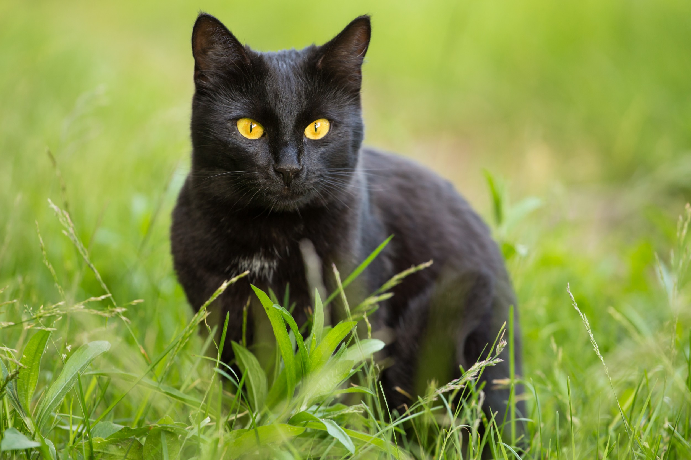

Nós só pensamos quanos nos defrontamos com um problema.
Jonh Dewey
Vamos utilizar algumas tags para dar significado a conteúdos como conteúdo forte, ou para dar ênfaseem alguma parte do texto.
Caso você queira quebrar linha antes do parágrafo terminar é só utilizar o < br >
Nunca ajude uma criança numa tarefa em que ela se sente capaz de fazer
Maria Montessori
Quando vamos trabalhar com imagens sempre é interessante criarmos uma chamadaimagens para organizarmos nosso projeto
 
Link para site externo: Senac Americana
Link para um local na mesma página: Seção de Imagens
Link para outras páginas: Medieval ou Futurista
 />
/>